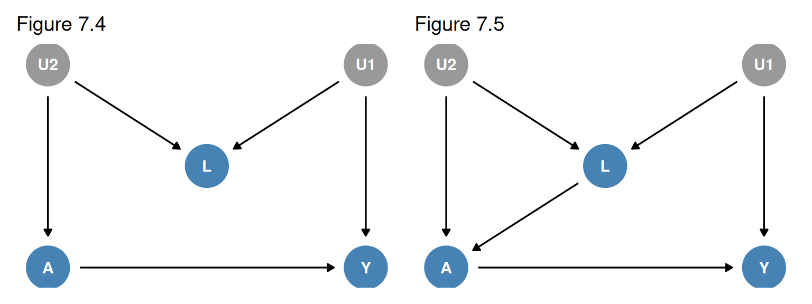

Chapter 7: Confounding
Suppose an investigator observes that when one pedestrian looks up at the sky, a second pedestrian tends to look up too. She also notices that pedestrians look up when they hear a thunderous noise overhead, so she cannot tell whether the second pedestrian looked up because of the first one or because of the noise: the effect of one person’s looking up is confounded by the noise. In a randomized experiment treatment is assigned by a coin flip, but in an observational study treatment may be determined by factors that also affect the outcome. The effects of those factors then become entangled with the effect of treatment. This chapter defines confounding structurally, links it to exchangeability, contrasts the structural definition with the traditional definition of a confounder, introduces single-world intervention graphs (SWIGs), and reviews methods to adjust for confounding.
1 7.1 The Structure of Confounding (pp. 91-93)
Confounding is the bias due to common causes of treatment and outcome.

In Figure 7.1 there are two sources of association between \(A\) and \(Y\):
- the causal path \(A \rightarrow Y\);
- the path \(A \leftarrow L \rightarrow Y\) through the common cause \(L\).
The second path is a backdoor path.
Definition 1 (Backdoor Path) In a causal DAG, a backdoor path is a noncausal path between treatment and outcome that remains even if all arrows pointing from treatment to other variables (the descendants of treatment) are removed. That is, the path has an arrow pointing into treatment (Hernán and Robins 2020, 91).
If \(L\) did not exist, all the association between \(A\) and \(Y\) would be causal, and the associational risk ratio \(\Pr[Y = 1 \mid A = 1] / \Pr[Y = 1 \mid A = 0]\) would equal the causal risk ratio \(\Pr[Y^{a=1} = 1] / \Pr[Y^{a=0} = 1]\). The common cause \(L\) adds a second source of association, which is confounding for the effect of \(A\) on \(Y\).
Examples of Confounding

- Occupational factors (Figure 7.1): physical fitness \(L\) causes both working as a firefighter \(A\) and lower mortality \(Y\) (healthy worker bias).
- Clinical decisions (Figure 7.1 or 7.2): heart disease \(L\) is an indication for aspirin \(A\) and a risk factor for stroke \(Y\), either directly or through unmeasured atherosclerosis \(U\) (confounding by indication or channeling).
- Lifestyle (Figure 7.3): personality and social factors \(U\) lead to both lack of exercise \(A\) and smoking \(L\), which affects death \(Y\).
- Genetic factors (Figure 7.3): a DNA sequence \(L\) that affects trait \(Y\) is more frequent among carriers of sequence \(A\) (linkage disequilibrium or population stratification).
- Social factors (Figure 7.1): disability at age 55 \(L\) affects income at age 65 \(A\) and disability at age 75 \(Y\).
- Environmental exposures (Figure 7.3): weather \(U\) affects levels of particulate matter \(A\) and of other pollutants \(L\) that cause coronary heart disease \(Y\).
2 7.2 Confounding and Exchangeability (pp. 93-95)
When marginal exchangeability \(Y^a \perp\!\!\!\perp A\) holds, as in a marginally randomized experiment, the average causal effect is identified without adjustment:
\[\text{E}{\left[Y^{a=1}\right]} - \text{E}{\left[Y^{a=0}\right]} = \text{E}{\left[Y \mid A = 1\right]} - \text{E}{\left[Y \mid A = 0\right]}\]
When only conditional exchangeability \(Y^a \perp\!\!\!\perp A \mid L\) holds, as in a conditionally randomized experiment, the average causal effect is identified by adjusting for \(L\) via standardization or IP weighting, and the conditional effects \(\text{E}{\left[Y^{a=1} \mid L = l\right]} - \text{E}{\left[Y^{a=0} \mid L = l\right]}\) are identified by stratification.
Theorem 1 (Standardization Under Conditional Exchangeability) Under conditional exchangeability \(Y^a \perp\!\!\!\perp A \mid L\), positivity, and consistency,
\[\text{E}{\left[Y^a\right]} = \sum_l \text{E}{\left[Y \mid L = l, A = a\right]} \Pr[L = l]\]
Proof. \[\begin{align} \text{E}{\left[Y^a\right]} &= \sum_l \text{E}{\left[Y^a \mid L = l\right]} \Pr[L = l] && \text{(law of total expectation)} \\ &= \sum_l \text{E}{\left[Y^a \mid L = l, A = a\right]} \Pr[L = l] && \text{(conditional exchangeability; positivity)} \\ &= \sum_l \text{E}{\left[Y \mid L = l, A = a\right]} \Pr[L = l] && \text{(consistency)} \end{align}\]
Positivity, \(\Pr[A = a \mid L = l] > 0\) for all \(l\) with \(\Pr[L = l] > 0\), ensures that the conditional mean in the second line is defined.
Supplement: A Numerical Example
This hypothetical example is not from the book. Twenty individuals receive a drug \(A\); \(L = 1\) indicates a high-risk group; \(Y = 1\) indicates death.
| \(L\) | \(A\) | \(n\) | Deaths | \(\Pr[Y = 1 \mid A, L]\) |
|---|---|---|---|---|
| 1 | 1 | 8 | 4 | 0.50 |
| 1 | 0 | 2 | 1 | 0.50 |
| 0 | 1 | 2 | 0 | 0.00 |
| 0 | 0 | 8 | 0 | 0.00 |
Crude risks: \(\Pr[Y = 1 \mid A = 1] = (4 + 0) / (8 + 2) = 0.40\) and \(\Pr[Y = 1 \mid A = 0] = (1 + 0) / (2 + 8) = 0.10\).
With \(\Pr[L = 1] = 10/20 = 0.50\), standardization (Theorem 1) gives
\[\begin{align} \Pr[Y^{a=1} = 1] &= 0.50 \times 0.50 + 0.00 \times 0.50 = 0.25 \\ \Pr[Y^{a=0} = 1] &= 0.50 \times 0.50 + 0.00 \times 0.50 = 0.25 \end{align}\]
so the standardized risk difference is \(0\), while the crude risk difference is \(0.40 - 0.10 = 0.30\).
The Backdoor Criterion
If we know the true causal DAG, how can we tell whether some set \(L\) yields conditional exchangeability? The book gives two approaches: the backdoor criterion (Pearl 1995) and the transformation of the DAG into a SWIG (Section 7.5).
Definition 2 (Backdoor Criterion) A set of covariates \(L\) satisfies the backdoor criterion if
- all backdoor paths between \(A\) and \(Y\) are blocked by conditioning on \(L\), and
- \(L\) contains no variables that are descendants of treatment \(A\).
Under faithfulness (and the causal model discussed in Technical Point 7.1), conditional exchangeability \(Y^a \perp\!\!\!\perp A \mid L\) holds if and only if \(L\) satisfies the backdoor criterion. Checking every subset of measured non-descendants of \(A\) therefore tells us whether any of them achieves conditional exchangeability.
Technical Point 7.1: Does Conditional Exchangeability Imply the Backdoor Criterion?
That \(L\) satisfies the backdoor criterion always implies conditional exchangeability given \(L\), even without faithfulness. The converse (given faithfulness) holds under an FFRCISTG model (Technical Point 6.3). Under an NPSEM-IE model, conditional exchangeability can hold without the backdoor criterion, for example in the DAG with nodes \(A, L, Y\) and arrows \(A \rightarrow L\), \(A \rightarrow Y\).
The difference arises because the NPSEM-IE assumes cross-world independencies between counterfactuals, which no randomized experiment could ever verify; for that reason Robins did not assume them in the FFRCISTG model. The book assumes an FFRCISTG model and faithfulness unless stated otherwise (Hernán and Robins 2020, 94).
Two Settings in Which the Backdoor Criterion Holds
- No common causes of treatment and outcome (e.g., Figure 6.2): there are no backdoor paths, the empty set satisfies the criterion, and there is no confounding. This is a marginally randomized experiment; marginal exchangeability is equivalent to no common causes of treatment and outcome.
- Common causes, but a set \(L\) of measured non-descendants of \(A\) blocks all backdoor paths (e.g., Figure 7.1): there is confounding, but no unmeasured confounding. This is a conditionally randomized experiment, with an arrow \(L \rightarrow A\) by design.
Definition 3 (Sufficient Set for Confounding Adjustment) A set \(L\) of measured non-descendants of \(A\) is a sufficient set for confounding adjustment when conditioning on \(L\) blocks all backdoor paths, that is, when the treated and the untreated are exchangeable within levels of \(L\).
3 7.3 Confounding and the Backdoor Criterion (pp. 95-98)
Applying the backdoor criterion to Figures 7.1-7.3:
- Figure 7.1: the backdoor path \(A \leftarrow L \rightarrow Y\) is blocked by conditioning on \(L\).
- Figure 7.2: the backdoor path \(A \leftarrow L \leftarrow U \rightarrow Y\) could be blocked by \(U\), which is unmeasured, but it is also blocked by \(L\).
- Figure 7.3: the backdoor path \(A \leftarrow U \rightarrow L \rightarrow Y\) is also blocked by \(L\).
In all three there is confounding, but no unmeasured confounding given \(L\).
M-bias: Figure 7.4


In Figure 7.4 \(A\) and \(Y\) share no common cause, so there is no confounding: the backdoor path \(A \leftarrow U_2 \rightarrow L \leftarrow U_1 \rightarrow Y\) is blocked by the collider \(L\), and \(\Pr[Y^a = 1] = \Pr[Y = 1 \mid A = a]\).
Example 1 (Physical Activity and Cervical Cancer) Let \(A\) be physical activity, \(Y\) cervical cancer, \(U_1\) a pre-cancer lesion, \(L\) a Pap smear (a diagnostic test for pre-cancer), and \(U_2\) a health-conscious personality that leads to more physical activity and more doctor visits. Under Figure 7.4 the effect of \(A\) on \(Y\) is unconfounded, and there is no need to adjust for \(L\) to compute \(\Pr[Y^{a=1} = 1]\) or \(\Pr[Y^{a=0} = 1]\) (Hernán and Robins 2020, 95).
Adjusting for \(L\) in Figure 7.4 would create bias, because conditioning on the collider \(L\) opens the path \(A \leftarrow U_2 \rightarrow L \leftarrow U_1 \rightarrow Y\). Here unconditional exchangeability holds but conditional exchangeability given \(L\) does not: the average causal effect is identified, but the effects within levels of \(L\) generally are not. The book calls the resulting bias selection bias (Chapter 8); it is also known as M-bias.
Intractable Bias: Figure 7.5
Figure 7.5 adds the arrow \(L \rightarrow A\), which creates the open backdoor path \(A \leftarrow L \leftarrow U_1 \rightarrow Y\): there is confounding.
- Conditioning on \(L\) blocks \(A \leftarrow L \leftarrow U_1 \rightarrow Y\),
- but opens \(A \leftarrow U_2 \rightarrow L \leftarrow U_1 \rightarrow Y\), on which \(L\) is a collider.
There is neither unconditional exchangeability nor conditional exchangeability given \(L\). The definition of collider is path-specific: \(L\) is a collider on the second path but not on the first.
A solution is to measure either a variable \(L_1\) between \(U_1\) and \(A\) or \(Y\), which yields conditional exchangeability given \(L_1\), or a variable \(L_2\) between \(U_2\) and \(A\) or \(L\), which yields conditional exchangeability given \(\{L_2, L\}\). Figure 7.6 adds \(L_1\) between \(U_1\) and \(Y\) and \(L_2\) between \(U_2\) and \(A\).
Fine Point 7.1: The Strength and Direction of Confounding Bias
Suppose a study of heart transplant \(A\) on death \(Y\) finds a risk ratio of 0.6, and a critic suspects confounding by smoking \(L\). Smokers are less likely to receive a transplant and more likely to die. Because the transplant group has fewer smokers, it would have lower mortality even under the null, so adjusting for smoking moves the estimate upward (the book’s illustration: from 0.6 to 0.7). Failing to adjust exaggerates the apparent benefit.
Signed causal diagrams. With dichotomous \(L\), \(A\), \(Y\) in Figure 7.1, put a \(+\) on the arrow \(L \rightarrow A\) if \(L\) has a positive average causal effect on \(A\), otherwise a \(-\); likewise for \(L \rightarrow Y\).
- Both signs equal: positive confounding; the unadjusted estimate is biased upward.
- Signs differ: negative confounding; the unadjusted estimate is biased downward.
In the smoking example, \(L \rightarrow A\) is \(-\) and \(L \rightarrow Y\) is \(+\), so the confounding is negative, consistent with the unadjusted 0.6 lying below the adjusted 0.7. This simple rule may fail in more complex diagrams or with non-dichotomous variables (VanderWeele, Hernán, and Robins 2008).
Magnitude. A large confounding bias requires a strong confounder-treatment association and a strong confounder-outcome association (conditional on treatment); for discrete confounders it also depends on the confounder’s prevalence. For unknown confounders, sensitivity analyses can organize educated guesses about the size of the bias (Hernán and Robins 2020, 96).
Confounders and Non-confounders
Suppose data on \(L\), \(A\), and \(Y\) suffice to identify the causal effect, as in Figures 7.1-7.4.
Definition 4 (Confounder (Given Data on L, A, Y)) \(L\) is a confounder if data on \(A\) and \(Y\) alone do not suffice for identification, that is, if there is conditional exchangeability given \(L\) but not unconditional exchangeability (structural confounding). \(L\) is a non-confounder if data on \(A\) and \(Y\) alone suffice, that is, if there is unconditional exchangeability (Hernán and Robins 2020, 96).
- In Figures 7.1-7.3, \(L\) is a confounder: \(\Pr[Y^a = 1]\) is identified by the standardized risk \(\sum_l \Pr[Y = 1 \mid A = a, L = l] \Pr[L = l]\). In Figures 7.2 and 7.3, \(L\) is not a common cause of \(A\) and \(Y\), yet it is a confounder because it is needed to block the backdoor path through \(U\).
- In Figure 7.4, \(L\) is a non-confounder, and \(\Pr[Y^a = 1] = \Pr[Y = 1 \mid A = a]\). Standardizing by \(L\) would be biased.
Two Definitions of Confounding
The causal diagrams of this section show two structural sources of lack of exchangeability through open backdoor paths:
- common causes of treatment and outcome, which the book calls confounding;
- conditioning on a common effect, which the book calls selection bias.
An alternative definition calls confounding any “bias due to an open backdoor path between \(A\) and \(Y\)”, equivalently “any systematic bias that would be eliminated by randomized assignment of \(A\)”. It differs only in labeling the bias from conditioning on \(L\) in Figure 7.4 as confounding.
Fine Point 7.2: Identification of Conditional and Unconditional Effects
Which effects can be identified depends on which variables are measured. In Figure 7.6:
- Measuring only \(L_2\): no exchangeability given \(L_2\); no causal effects are identified.
- Measuring \(L_2\) and \(L\): conditional exchangeability given \(\{L_2, L\}\) (but not given either alone). Identified are:
- effects within joint strata of \(L\) and \(L_2\), via \(\text{E}{\left[Y \mid A = a, L = l, L_2 = l_2\right]}\);
- the unconditional effect, via \(\sum_{l, l_2} \text{E}{\left[Y \mid A = a, L = l, L_2 = l_2\right]} \Pr[L = l, L_2 = l_2]\);
- effects within strata of \(L\), via \(\sum_{l_2} \text{E}{\left[Y \mid A = a, L = l, L_2 = l_2\right]} \Pr[L_2 = l_2 \mid L = l]\);
- effects within strata of \(L_2\), via \(\sum_{l} \text{E}{\left[Y \mid A = a, L = l, L_2 = l_2\right]} \Pr[L = l \mid L_2 = l_2]\).
- Measuring only \(L_1\): effects within strata of \(L_1\) and the unconditional effect.
- Measuring \(L_1\) and \(L\): additionally, effects within joint strata of \(L_1\) and \(L\), and within strata of \(L\).
- Measuring \(L\), \(L_1\), and \(L_2\): additionally, effects within joint strata of all three (Hernán and Robins 2020, 98).
4 7.4 Confounding and Confounders (pp. 98-101)
The structural approach needs prior knowledge of the causal DAG, including all shared causes (measured or not) of \(A\) and \(Y\); the backdoor criterion then says what to adjust for. The traditional approach instead labels as confounders the variables meeting mostly associational conditions, mandates adjusting for them, and declares confounding when adjusted and unadjusted estimates differ.
Definition 5 (Traditional Definition of Confounder) A variable is a confounder under the traditional approach if it
- is associated with the treatment,
- is associated with the outcome conditional on the treatment (often replaced by “in the untreated”), and
- does not lie on a causal pathway between treatment and outcome.
Where the Traditional Approach Agrees and Disagrees
- Figures 7.1-7.3: \(L\) meets all three conditions, matching the backdoor criterion.
- Figure 7.4: \(L\) meets all three conditions (it shares \(U_2\) with \(A\) and \(U_1\) with \(Y\), and is not on the causal pathway), so the traditional approach says to adjust for it, although there is no confounding and adjusting causes selection bias.
- Figure 7.7 is a second example in which the traditional approach leads to harmful adjustment for \(L\).
Replacing condition 2 by the structural condition “it is a cause of the outcome” fixes Figure 7.4, but then \(L\) in Figure 7.2 would no longer count as a confounder, although it must be adjusted for (Technical Point 7.2).
Confounding Is Absolute; Confounder Is Relative
The structural approach first identifies the sources of confounding (the common causes of treatment and outcome) and then a sufficient adjustment set. Whether a variable belongs to a sufficient set depends on the other variables in it. In Figures 7.2 and 7.3, \(L\) is needed only because \(U\) is unmeasured; given \(U\), \(L\) would not be a confounder. Given a causal DAG, confounding is an absolute concept, whereas confounder is a relative one (Hernán and Robins 2020, 100).
The structural approach has two advantages:
- it prevents inconsistencies between beliefs and actions (if you believe Figure 7.4, you will not adjust for \(L\), whatever a non-structural definition says);
- it makes the researchers’ assumptions explicit, so others can criticize them.

Fine Point 7.3: Surrogate Confounders
In Figure 7.8 the unmeasured \(U\) (e.g., socioeconomic status) confounds the effect of physical activity \(A\) on cardiovascular disease \(Y\), and the measured \(L\) (e.g., income) is a proxy for \(U\). \(L\) is not on a backdoor path, but adjusting for it may remove some of the confounding by \(U\); if \(L\) were perfectly correlated with \(U\), conditioning on \(L\) would be the same as conditioning on \(U\). If \(L\) is a binary, nondifferentially misclassified version of \(U\), conditioning on \(L\) partially blocks \(A \leftarrow U \rightarrow Y\) under some weak conditions (Greenland 1980; Ogburn and VanderWeele 2012). So one typically prefers to adjust for \(L\).
Variables that can reduce, but never completely eliminate, confounding bias without lying on a backdoor path are surrogate confounders (Hernán and Robins 2020, 100). One strategy is to measure and adjust for as many surrogate confounders as possible (see Chapter 18).
Technical Point 7.2: Fixing the Traditional Definition of Confounder
The traditional definition relies on two incorrect statistical criteria (conditions 1 and 2) and one incorrect causal criterion (condition 3). To fix it:
- Replace condition 3 by: there exist variables \(L\) and \(U\) such that \(Y^a \perp\!\!\!\perp A \mid L, U\). This implies that \(L\) is not on a causal pathway from \(A\) to \(Y\) and that \(\text{E}{\left[Y^a \mid L = l, U = u\right]}\) is identified by \(\text{E}{\left[Y \mid L = l, U = u, A = a\right]}\).
- Replace conditions 1 and 2 by: \(U\) can be split into disjoint subsets \(U_1\) and \(U_2\) (\(U = U_1 \cup U_2\), \(U_1 \cap U_2 = \emptyset\)) such that
- \(U_1\) and \(A\) are not associated within strata of \(L\), and
- \(U_2\) and \(Y\) are not associated within joint strata of \(A\), \(L\), and \(U_1\).
If both conditions hold, \(U\) is a non-confounder given data on \(L\). These conditions were proposed by Robins (1997, Theorem 4.3) and discussed by Greenland, Pearl, and Robins (1999), who used them to show there is no confounding in Figure 7.4 (Hernán and Robins 2020, 101).
5 7.5 Single-World Intervention Graphs (pp. 101-102)
The equivalence between exchangeability and the backdoor criterion seems “rather magical” because counterfactuals do not appear on causal diagrams. Single-world intervention graphs (SWIGs) put the counterfactual variables on the graph, so that exchangeability can be read off directly by d-separation.
Definition 6 (Single-World Intervention Graph (SWIG)) A SWIG depicts the variables and causal relations that would be observed in a hypothetical world in which all individuals received treatment level \(a\), a counterfactual world created by a single intervention. It is obtained from a causal DAG as follows:
- Split the treatment node into a left side \(A\) (the natural value of treatment, the value that would have been observed without intervention), which keeps all arrows into \(A\), and a right side \(a\) (the intervention value), which inherits all arrows out of \(A\). There is no arrow from \(A\) to \(a\), because \(a\) is a constant.
- Replace each descendant of treatment by its counterfactual, e.g., \(Y\) by \(Y^a\). Non-descendants of \(A\) keep their factual labels, because treatment does not affect them.
Example 2 (SWIGs for Figures 7.2 and 7.4)
- Figure 7.9 is the SWIG of Figure 7.2: \(U \rightarrow L \rightarrow A\), \(U \rightarrow Y^a\), \(a \rightarrow Y^a\). Every path between \(Y^a\) and \(A\) is blocked by conditioning on \(L\), so \(Y^a \perp\!\!\!\perp A \mid L\).
- Figure 7.10 is the SWIG of Figure 7.4: \(U_2 \rightarrow A\), \(U_2 \rightarrow L \leftarrow U_1 \rightarrow Y^a\), \(a \rightarrow Y^a\). Without conditioning, the path through the collider \(L\) is blocked, so \(Y^a \perp\!\!\!\perp A\). Conditioning on \(L\) opens \(Y^a \leftarrow U_1 \rightarrow L \leftarrow U_2 \rightarrow A\), so \(Y^a \perp\!\!\!\perp A \mid L\) fails.
On the SWIG, \(Y^a\) is d-separated from \(A\) given \(L\) if and only if \(L\) is a non-descendant of \(A\) that blocks all backdoor paths from \(A\) to \(Y\). This is the simple SWIG-based argument for the equivalence stated in Section 7.2.
6 7.6 Confounding Adjustment (pp. 102-107)
Without randomization, causal inference relies on the uncheckable assumption that the measured \(L\) is a sufficient set for confounding adjustment. Under that assumption, methods that adjust for \(L\) fall into two categories:
- G-methods (“g” for generalized): standardization, IP weighting, and g-estimation. They estimate the causal effect in the whole population or in any subset. The heart transplant study used standardization (Section 2.4) and IP weighting (Section 2.5); Part II covers the parametric g-formula, IP weighting of marginal structural models, and g-estimation of structural nested models.
- Conventional stratification-based methods: stratification (including restriction) and matching. They estimate the association between \(A\) and \(Y\) within subsets defined by \(L\) (Sections 4.4 and 4.5); Part II covers their model-based extension, outcome regression.
Fine Point 7.4: Confounders Cannot Be Descendants of Treatment, but Can Be in the Future of Treatment
In Figure 7.11, \(L\) is a descendant of \(A\) that blocks all backdoor paths, and the effect of \(A\) on \(Y\) is entirely through \(L\). Conditioning on \(L\) opens no collider path, but it blocks the causal pathway, so adjusting for \(L\) does not remove bias. Hence conditional exchangeability \(Y^a \perp\!\!\!\perp A \mid L\) must fail. On the SWIG (Figure 7.12) \(L\) is replaced by the counterfactual \(L^a\), and we can read off \(Y^a \perp\!\!\!\perp A \mid L^a\) but not \(Y^a \perp\!\!\!\perp A \mid L\), since \(L\) is not on the graph. (Under an FFRCISTG model, an independence that cannot be read off the SWIG cannot be assumed to hold.)
The problem is that \(L\) is a descendant of \(A\), not that \(L\) occurs after \(A\). Without the arrow \(A \rightarrow L\), \(L\) would be a non-descendant that blocks all backdoor paths, and adjusting for it would remove all bias even if \(L\) were measured after \(A\). What matters is the topology of the causal diagram, not the time order of the nodes (Hernán and Robins 2020, 103).
Methods That Do Not Require Conditional Exchangeability
Some methods handle confounding without conditional exchangeability:
- difference-in-differences and negative outcome controls (Technical Point 7.3);
- proximal inference (Technical Point 7.3);
- the front door criterion (Technical Point 7.4);
- instrumental variable estimation (Chapter 16).
They replace conditional exchangeability with other assumptions that are just as unverifiable, so the choice of method depends on which unverifiable assumptions are more plausible in a given setting.
Expert Knowledge and the Critic
Conditional exchangeability may be unrealistic, but expert knowledge about the causal structure helps get close to it:
- measure many non-descendants \(L\) of treatment in the hope of blocking all backdoor paths;
- avoid adjusting for variables affected by treatment or by the outcome;
- when several causal structures are plausible, analyze under each and state the assumptions each requires.
A critic who says only “your observational study may be confounded” makes a logical, not a scientific, statement: it is true of every observational study. A scientific criticism names a source, such as “confounding due to cigarette smoking, a common cause through which a backdoor path may remain open”. That gives a testable challenge: adjust for smoking or, if smoking was not measured, conduct a sensitivity analysis (Hernán and Robins 2020, 104–5).

Technical Point 7.3: Difference-in-Differences and Negative Outcome Controls
Suppose unmeasured \(U\) (e.g., history of heart disease) confounds the effect of aspirin \(A\) on blood pressure \(Y\), and we also measured the outcome just before treatment, \(C\), a negative outcome control (Figure 7.13). \(A\) cannot cause \(C\), so \(\text{E}{\left[C \mid A = 1\right]} - \text{E}{\left[C \mid A = 0\right]}\) measures additive confounding for the effect of \(A\) on \(C\).
Under additive equi-confounding, \(\text{E}{\left[Y^0 \mid A = 1\right]} - \text{E}{\left[Y^0 \mid A = 0\right]} = \text{E}{\left[C \mid A = 1\right]} - \text{E}{\left[C \mid A = 0\right]}\), the effect in the treated is identified:
\[\begin{align} \text{E}{\left[Y^1 - Y^0 \mid A = 1\right]} &= \text{E}{\left[Y^1 \mid A = 1\right]} - \text{E}{\left[Y^0 \mid A = 1\right]} && \text{(linearity)} \\ &= \text{E}{\left[Y \mid A = 1\right]} - \text{E}{\left[Y^0 \mid A = 1\right]} && \text{(consistency)} \\ &= \text{E}{\left[Y \mid A = 1\right]} - \text{E}{\left[Y^0 \mid A = 0\right]} - \left(\text{E}{\left[Y^0 \mid A = 1\right]} - \text{E}{\left[Y^0 \mid A = 0\right]}\right) && \text{(add and subtract } \text{E}{\left[Y^0 \mid A = 0\right]}\text{)} \\ &= \text{E}{\left[Y \mid A = 1\right]} - \text{E}{\left[Y \mid A = 0\right]} - \left(\text{E}{\left[Y^0 \mid A = 1\right]} - \text{E}{\left[Y^0 \mid A = 0\right]}\right) && \text{(consistency)} \\ &= \left(\text{E}{\left[Y \mid A = 1\right]} - \text{E}{\left[Y \mid A = 0\right]}\right) - \left(\text{E}{\left[C \mid A = 1\right]} - \text{E}{\left[C \mid A = 0\right]}\right) && \text{(equi-confounding)} \end{align}\]
The association of \(A\) with \(Y\) (effect plus confounding) minus the confounding measured through \(C\). The arrow \(C \rightarrow Y\) is not necessary for \(C\) to be a negative outcome control. This is difference-in-differences (Card 1990; Meyer 1995; Angrist and Krueger 1999). It is a somewhat restrictive use of negative outcome controls: it needs \(Y\) and \(C\) on the same scale and additive equi-confounding; Sofer et al. (2016) describe more general methods.
With both a negative outcome control \(C\) and a negative treatment control \(Z\), the effect can be identified nonparametrically despite unmeasured \(U\) under additional assumptions; for discrete \(U\), \(C\), \(Z\) with \(C\) and \(Z\) having at least as many levels as \(U\), identification holds quite generally (Miao et al. 2018). This is proximal causal inference (Cui et al. 2024); Figure 7.15 is an example (Hernán and Robins 2020, 106).
Technical Point 7.4: The Front Door Criterion
In Figure 7.14, unmeasured \(U\) confounds \(A\) and \(Y\), and \(M\) fully mediates the effect of \(A\) on \(Y\) and shares no unmeasured causes with \(A\) or \(Y\). Standardization and IP weighting cannot be used because \(U\) is unavailable, but Pearl (1995) showed that \(\Pr[Y^a = 1]\) is identified by the front door formula
\[\Pr[Y^a = 1] = \sum_m \Pr[M = m \mid A = a] \sum_{a'} \Pr[Y = 1 \mid M = m, A = a'] \Pr[A = a']\]
(Pearl’s “backdoor formula” is what the book calls standardization or the point-treatment g-formula.)
Proof.
- By the law of total probability, \(\Pr[Y^a = 1] = \sum_m \Pr[M^a = m] \Pr[Y^a = 1 \mid M^a = m]\).
- \(\Pr[M^a = m] = \Pr[M = m \mid A = a]\), because there is no confounding for the effect of \(A\) on \(M\) (\(M^a \perp\!\!\!\perp A\)).
-
\(\Pr[Y^a = 1 \mid M^a = m] = \Pr[Y^m = 1]\), because
- \(Y^a = Y^m\) when \(M^a = m\) (\(A\) affects \(Y\) only through \(M\)), and
- \(Y^m \perp\!\!\!\perp M^a\) by d-separation on the SWIG for the joint intervention setting \(M\) to \(m\) and \(A\) to \(a\).
- \(\Pr[Y^m = 1] = \sum_{a'} \Pr[Y = 1 \mid M = m, A = a'] \Pr[A = a']\), by conditional exchangeability \(Y^m \perp\!\!\!\perp M \mid A\) on the SWIG intervening on \(M\) alone (standardization over \(A\)).
- Substituting steps 2-4 into step 1 gives the front door formula.
This proof requires well-defined counterfactuals \(Y^m\); Technical Points 21.11 and 21.12 give proofs without that condition (Hernán and Robins 2020, 107).
7 Summary
- Confounding is the bias due to common causes of treatment and outcome, which create open backdoor paths.
- No confounding is equivalent to marginal exchangeability; with confounding, a sufficient set \(L\) of measured non-descendants of \(A\) gives conditional exchangeability, and standardization or IP weighting identifies the average causal effect.
- Under faithfulness and an FFRCISTG model, \(Y^a \perp\!\!\!\perp A \mid L\) holds if and only if \(L\) satisfies the backdoor criterion.
- Adjusting for a collider such as \(L\) in Figure 7.4 (M-bias) creates selection bias; in Figure 7.5 no adjustment set based on \(L\) alone works.
- The traditional associational definition of confounder can recommend harmful adjustment; confounding is absolute, but “confounder” is relative to the other adjustment variables.
- SWIGs split the treatment node and show exchangeability directly via d-separation.
- G-methods and conventional stratification-based methods both require conditional exchangeability; difference-in-differences, proximal inference, the front door criterion, and instrumental variables rely on other unverifiable assumptions.
8 References
Hernán, Miguel A, and James M Robins. 2020. Causal Inference: What If. Chapman & Hall/CRC. https://miguelhernan.org/whatifbook.